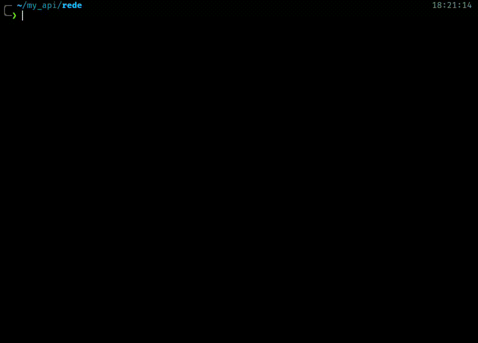

Rede
rede (galician word for "net") is a command-line utility to help run suites of requests to
ease the usage and testing of REST APIs. The main inspiration for this project comes from
Bruno and their command line tool.
The main goal behind this project is to have a suite of text files representing HTTP requests
that will be picked and executed by rede, allowing for easy sharing and control versioning
of these requests.

Request DSL
Rede requests are stored as plain text files, so they can be easily stored and shared in your project repositories via your favourite version control tool. You won't have to set a team with your peers to have a shared suite of request to test your application, you only need to push those files.
The DSL that request used is based on TOML as it's a simple and human-readable format that matches perfectly our needs. This is an example of a request that rede can execute.
[http]
method = "GET"
url = "https://dogapi.dog/api/v2/facts"
[headers]
Accept = "application/json"
User-Agent = "rede/v0.1.0"
[query_params]
limit = 1
Pretty easy to digest, right?
rede run
The main feature of rede is the command run. You can invoke with the name of the file of your
request and rede will execute it and return the results.

Installation
As this still an early stage of the project the package repository where it will be provides is cargo, so you would need to have Rust installed and run:
cargo install rede
Of course, if you have Rust installed you can also build it and/or install it yourself.
Another alternative is to download the latest binary from the releases page but only Linux binary will be available for the moment.
How to run
rede works using a DSL built on top of the TOML specification.
All the documentation regarding rede's DSL can be found on the respective page.
An easy way to boostrap a request following the DSL is running the rede example command.
It will generate a example.toml file looking like this.
[http]
method = "GET"
url = "https://dogapi.dog/api/v2/facts"
[headers]
Accept = "application/json"
User-Agent = "rede/v0.1.0"
[query_params]
limit = 1
Once you have run this command, or redacted your own request you will be ready to execute rede.
rede run <your_file>
And that's all you need to start making requests with rede, but the CLI allows for more capabilities.
Request DSL
rede is built to work around TOML files modeling an HTTP request.
This is an example of a pretty complex HTTP request following rede DSL.
[http]
method = "POST"
url = "https://www.myapi.gl/api/images"
version = "HTTP/1.1"
[metadata]
name = "Submit image"
description = "Uploads a new image"
author = "John Carmack"
[headers]
Content-Type = "multipart/form-data"
Authorization = "Bearer am6Mlw33eCVK"
Accept = "application/json"
[body.form_data]
username.text = "DoomGuy"
description.text = "Just chilling killing some demons"
image.file = "~/Pictures/hell/ripping_living_heart_from_demon.png"
I could explain the request that is being represented there, but this format is so readable that there's no need.
Tables
Each table ([table]) represents a section of an HTTP request and inside each one a series of keys or tables can be
defined to provided all you need to represent the HTTP call.
Some considerations applying to the whole schema:
- Only
httpis required, all the other tables are optional. - The order is not relevant. The order used in this section is only for improve readability.
- Every valid TOML declaration is supported. There's no need to use the same as the examples here.
- Any multiword key supports
camel_case,lowercaseandkebab-case.
[http]
This table accepts three possible keys:
url, string. The only key required in the whole DSL.method, string. If omitted it will beGET. Accepts extension methods.version, string of typeHTTP/x.y. If omitted it will default toHTTP/1.1.
[http]
url = "127.0.0.1/api"
method = "DELETE"
version = "HTTP/2.0"
[headers]
This table is free. There's no predefined keys but all values must be strings. No transformation is applied to these headers so they must follow the HTTP restrictions.
[headers]
date = "1970-01-01"
My-Own_Weird_Header = "its valid tho"
warning: some common leaders like Host and Content-Type will be autogenerated by
rede based on the other fields of the request. Future plans contemplate allowing the
option to disable this autogeneration
[query_params]
This table is free. There's no predefined keys but the values can't be of type datetime or tables. Arrays are supported and will be sent in the request as a comma separated list of the values.
[query-params]
size = 10
genre = "scifi"
tags = [ "dystopia", "space" ]
[body]
The body is a table that can only contain a single key specifying the type of body and the respective content of the body as value. Defining more than one body type would return an error. The see all body types refer to the body page.
body.binary = "./doc/project_v2_final_final.pdf"
[body.x-www-form-urlencoded]
name = "Feldespato"
location = "unknown"
[metadata]
This table is free but the values must be one of the primitive values (string, integer,
float or boolean). It allows you to add any meaningful meta information. One key is currently
queried by rede but more could come in the future (for example, description):
name. If present,redewill use it to refer to the request instead of using the filename. _This works only for printing purposes,rede runstill requires the filename.
Body
The [body] table accepts a series of keys representing the different types that could be submitted
via HTTP. Only one of those types can be defined, attempting to use more than one would render the
request invalid.
In this first version only four types are supported, but all these types in conjunction with the appropriate headers are enough to represent all possible mime types.
binary
Must contain as value the path to the file that will be sent. IMPORTANT, the path must be relative
to the point where rede will be executed, not relative to the request file. Future implementations
could change this behavior, but keep in mind that this is the current state. A valid alias for the key
is file.
If no Content-Type is set in the request, using this type will set it to application/octet-stream.
body.binary = "$HOME/Videos/la caida de Edgar.mp4"
raw
Must contain as a value the string representing the body content. Tip: TOML supports multiline strings
for your JSONs and XMLs. A valid alias for the key is text.
If no Content-Type is set in the request, using this type will set it to text/plain.
[body]
raw = """
{
"song": "Bohemian Rhapsody",
"group": "Queen",
"awesome": true
}
"""
x_www_form_urlencoded
Similar to query params. Free table supporting everything except
datetimes and tables as value. Array will be transformed into a comma-separated list of values.
A valid alias for the key is form_url_encoded.
If no Content-Type is set in the request, using this type will set it to application/x-www-form-urlencoded.
[body.x-www-form-urlencoded]
username = "VeryDivorcedMan"
country = "za"
multipart_form_data
Free table but all its keys must be of type table having a single key of:
textwith the text content.filewith the path to the binary file. Like in binary the path must be relative to the point of execution, not the the request file.
Having a single form key with two possible types would be invalid. A valid alias for the key is
form_data.
If no Content-Type is set in the request, using this type will set it to multipart/form-data.
Command Line Interface
The general way of running rede is using rede <subcommand>. The current supported
subcommands are:
rede supports infering for both, subcommands and arguments. That means that you substrings
can match a command as long as there's no conflict. For example, this is valid way of using
rede run with --verbose:
rede r --verb my_request
Global options
The following options of rede can be used with all subcommands.
--verbose, ups the number of printing messages.--quiet, evades all standard output, only errors will be printed in stderr.--no-color, disables coloring in the outputs.--help, will print the help of the respective command.
rede run
To execute requests in rede you need to use rede run. This command accepts a path to a file
containing a valid rede request. The .toml extension is optional, but rede will only attempt
to load files with that extension. By default, it will print the body of the response, or the
status code if there's no body in the response.
rede run my_request
rede run is also ready to work with the stdin, so you can also use it in pipes:
cat my_request | rede run > response.json
Redirections
rede run will automatically follow redirect response to arrive at the pointed resource.
That means that unless this behavior is overriden run can't return 3xx responses. To
disable this behavior you can use the --no-redirect flag.
On top of that, run will throw an error after 10 redirections followed in the same
request, you can override this value with --max-redirects <value>
Verbosity
When using rede run with the different verbosity options this is what it will print (each
level will print the same as the previous plus what is described):
quiet, will only print errors to stderr. The waiting spinner can show but it will be deleted.standard, will print the response body. If it's empty, the response status code.verbose, will print the request that it's being sent (including headers and body) and the whole response received (status, headers and body).
Other options
rede run supports the following options:
--pretty-print, specifies if formatting and jump lines should be applied to the response body. It's enabled by default, but it can be disabled via--pretty-print=false--timeout, sets the maximum duration that the client should wait before giving a timeout. For example,--timeout 3sto wait max 3 seconds.
rede example
This command is intended to give a brief help to people starting with
rede. In this first version using it will only output a message
with an example of a request- It will also create a file named example.toml
with that request. This allows to have a valid request to try the run command.
rede example
rede run example
This command is intended to provide example of different types of features in the future, but right now it's limited to just this
Errors
failed connection
rede was unable to establish a connection with the server. It could be down
or the URL could be wrong.
failed request building
A part of your request is not correct, try looking into the cause to discern the reason.
invalid file
One of the files referenced in the request does not exist or can't be read. The most probable reson is that you defined a path relative to the request file, but the way rede works the path must be relative to the path from where you are executing rede.
invalid [REQUEST]
The request file specified in the command does not exist or can't be read.
invalid url
The parsed URL is invalid
unknown request error
Some error has occurred with your request that we didn't expect. You can create an issue in the repository to help you point out the issue or help us know about it to discern if we should give it its own error code and help.
redirect
The request has reached the maximum number of allowed redirections or some redirection loop has been detected.
spec violation
Two possible options. You have an invalid TOML or you are breaking the DSL. Follow the error cues to discern what it could be.
wrong http version
The endpoint of your request does not support the HTTP version defined in your request file.
Tools
Crates
As part of the development of rede the parsing feature was made into a crate of its own. That way it's available to use for any developer that would like to work with the request DSL and want to save the time of implementing the parsing.
Upcoming
These are the next planned features for rede v0.2:
Placeholders
The DSL would start to support strings like {{this}} embedded in other
strings or as values of different keys. This placeholders would be later
resolved with the new variables table or with input of the user.
Input parameters
The DSL will accept a new table to specify a series of placeholder that would be resolved asking the user before running the request. A series of features are planned for this, but some of them could be delayed.
- Support specification of the expected type.
- Support hints to help the user to provide a good value.
- Support multiple choice.
- Support default values to use if user omits the question.
- The flag
--all-defaultswould allow to evade the request prompts and just use the defaults for everything.
- The flag
--dry-runto produce a request without executing it, just to see it or render it as its own file.
Improved verbosity
We can currently have only three levels of verbosity, which is really limited, specially considering than one of those is "none at all". That's why next version the plan is to future five levels of verbosity.
quiet, like the current one, prints nothing at all.discrete, prints only the body of the request, what the standard currently does.- It's possible that this one could be used as default when using
rede runwith stdin to allow easier piping.
- It's possible that this one could be used as default when using
standard, will print the opening, the status code and the body.verbose, will be reduced from before. Will print the same as standard plus the method and url of the request and the headers of the response.stfu, will have everything like the current verbose.
Header generation
Right now rede generates automatically some headers before executing the
request. It makes sense to offer a way of turning down this feature.
On top of that, right now rede doesn't generate a User-Agent header, and it should.
New body types
It would be a nice addition to support some new body keys to generate some common body types like JSON and XML without having to manually set the content type header.
FAQ
Why is datetime not a valid value in any type?
Datetimes are easy to read, but not that easy to translate again into a string for the HTTP communication based on all the different formats that are possible. Accepting just a string representation with the expected format is the smoother way of handling it.
Does rede support GraphQL?
Yes, but right now it would require you some manual crafting. Just use POST,
a body.raw and don't forget to set a Content-Type: application/graphql header.